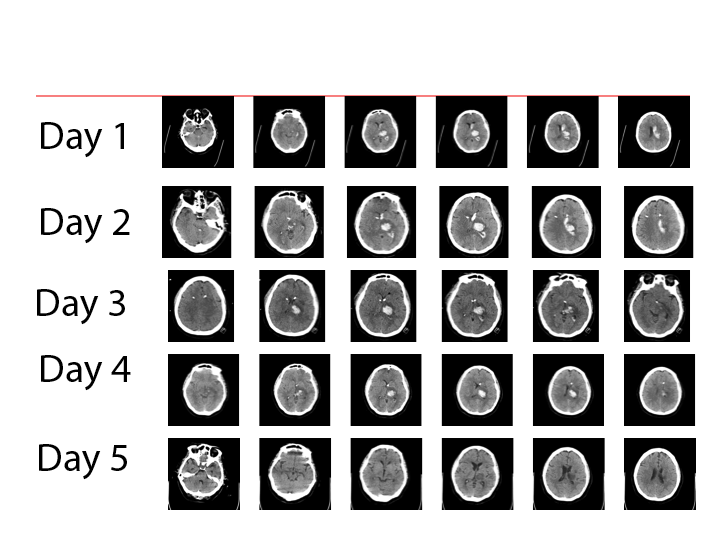

Talk Outline
- We have 3D/4D data
- Single-subject brains over time
- Brain maps over group
- We want to visualize the data
- We wrote some software to do it
- Examples
@StrictlyStat (github: muschellij2)
Johns Hopkins Bloomberg School of Public Health


Read left to right like a book - down the page is down the brain
Whole brain is acquired in "slices" - like a deli slicer.

Overall, most methods keep temporal or 2D spatial components fixed and vary the other.
Using orthographic from oro.nifti package:
orthographic(template, col = c(gray(0:61/64), hotmetal(3)), xyz = c(60, 85,
35), text = "Example of activation map", text.cex = 2)


An R package that can create exportable 4D scenes of surfaces:
brainR
R - load the data using oro.nifticontour3d from misc3dscene (list of objects)write4D function to create .STL or .OBJ files and an html file.